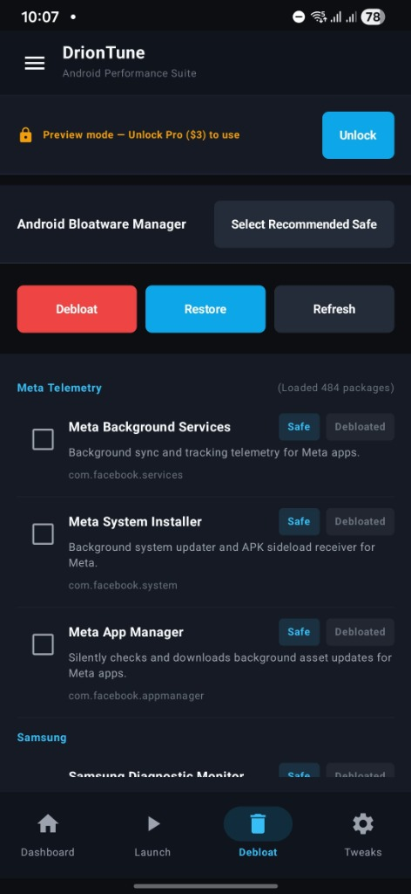

No Root, No Knox Trip
Runs over Shizuku's wireless ADB bridge. Banking apps, Play Integrity, and OTA updates stay intact.
DrionTune gives you root-level Android control through Shizuku. Freeze memory-hogging apps, trim system bloat, and monitor live CPU, RAM, ZRAM, and battery thermals—right on your phone.

Four focused tools. Zero background daemon draining your battery.
Watch combined CPU load, physical RAM, compressed ZRAM swap, and battery temperature in real time. Tap 1-Click Fix Lag to trim caches and kill background hogs before a match.
Pick your game, select background apps to suspend, and launch. DrionTune enables performance mode, whitelists your game from battery saver, and restores frozen apps when you're done.

Disable or uninstall pre-installed system packages per-user without touching the system partition. Every change is reversible—no unlocked bootloader or ADB cable needed.

Lock fixed performance clocks, disable GPU-taxing window blurs, stop ping spikes with stable network mode, disable Samsung GOS throttling, adjust Samsung RAM Plus swap, and bypass thermal limits when an active phone cooler is attached.

How DrionTune compares to Play Store cleaners and root-only tweaks.

Runs over Shizuku's wireless ADB bridge. Banking apps, Play Integrity, and OTA updates stay intact.
No persistent accessibility service or fake "RAM booster" notification eating CPU in the background.
Built with R8 minification, signed release APKs, and an in-app updater pointing straight to GitHub Releases.
Verified on Samsung, Xiaomi, and stock Android devices running Android 11 through Android 16.
No subscriptions. Pay once via Gumroad to unlock everything.
Everything you need for daily lag fixes and gaming.
Full system control with zero ads.
Quick answers on Shizuku, safety, and Pro licensing.
Shizuku lets apps run ADB-level system commands directly on your phone without root. You pair it once via Wireless Debugging in Developer Options.
DrionTune only uninstalls packages for user 0 (pm uninstall --user 0), leaving the system partition untouched. You can restore any disabled package in one tap.
Purchase once on Gumroad to receive a license key. Paste it inside DrionTune's Pro dialog to permanently unlock Debloater, Tweaks, and ad-free mode.
DrionTune checks GitHub Releases directly from the side menu and installs signed APK updates in-app.
Install DrionTune v1.1.3 and pair Shizuku in under two minutes.